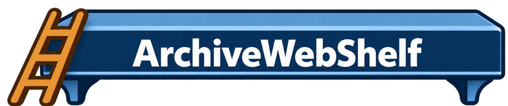

Record this page and save the WACZ straight into your Shelf.
Save inFor an archive you already exported with another tool. It will go into the selected folder above.
The current page is recorded first. Browse normally and click the pages or media you want to capture; the recorder will not visit links on its own. Stop and save when you are done.